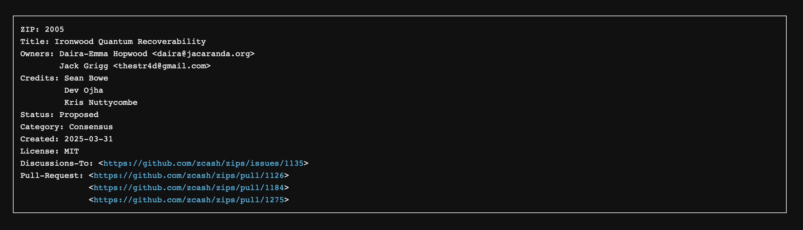
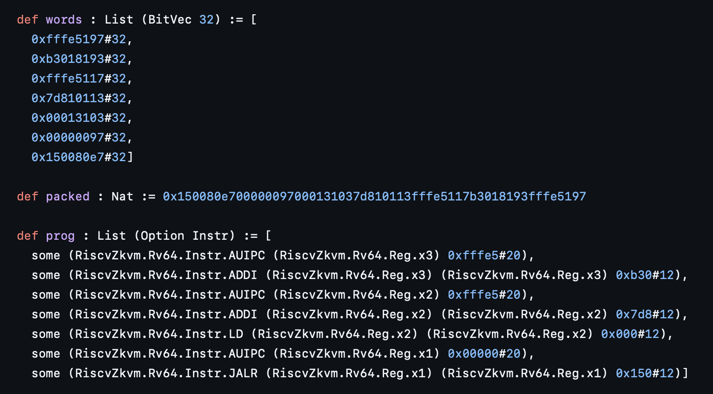
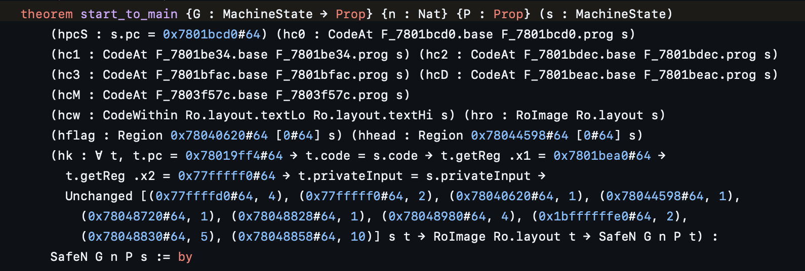
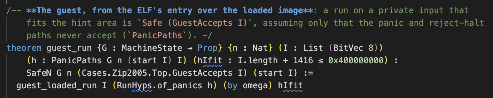

The journey to verifying bytecode directly
Derek Sorensen (Ethereum Foundation)
Problem: tedious and unintelligible
SMT solvers
Decompipler/tooling
the compiler
tooling
etc ..
can we forego trust in the compiler and/or interpreter?
evm-asmYoichi had the wild idea
Built it fron scratch (separation logic, etc.)
Out of this came riscv-zkvm
XMSS verifier in RV bytecode
Goal: minimise RV cycles
Took one afternoon

Justin called
Chat with Pierre


start_to_main steps prog from this entry and reaches main
Trusted base outside the statement:
The machine model (SP1 backend of riscv-zkvm)
The loaded image
The Lean kernel (elaborator, axioms)
Top-level proofs:

success in autoresearch at the asm level
good at synthesizing low-level proofs
there is a LOT that goes into compilers
large build times
huge complexity
devops/scaling problems
binary can come from any compiler
binary can be hand-optimised
Note that Zisk and SP1 differ in:
Calling convention for special operations
Memory layout and access rules
Input and output, etc.
Raw semantics?
Proof-optimised interpreter?
Something else?
Beyond the ISA, how much does the context matter?
(e.g. SP1 vs Zisk)
Can we abstract this? What trust does this introduce?
Will this scale?
Will copmlexity grow exponentially?
What is the appropriate target for something like this?
Is this basically just a logical decompiler?
Do we give agents the tools, or build an algorithm that runs over arbitrary code?
Probably a lot!